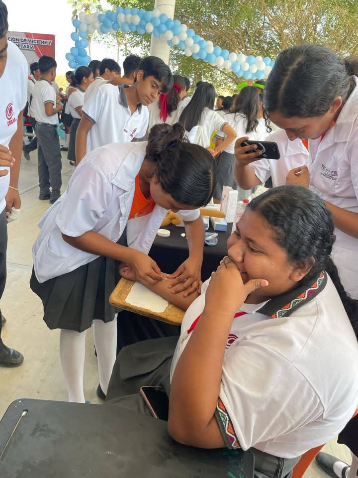

HIJIENE Y SALUD COMUNITARIA |
||
|  | ||
La capacitación en higiene y salud comunitaria en el bachillerato prepara a los estudiantes para trabajar en el sector de la salud. También les permite desarrollar hábitos y habilidades para cuidar su salud y la de su comunidad. OBJETIVO DE LA CAPACITACION :
| ||